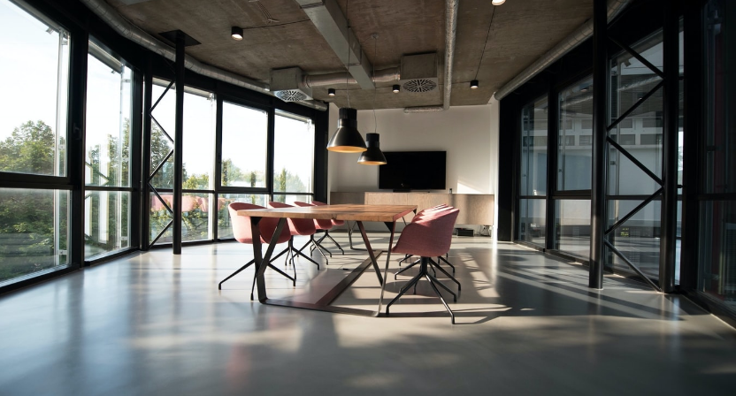

門市據點
-

台北中山旗艦店
- call 電話：(02)000-1234
- schedule 營業時間：10:00-21:00
- location_on 地址：台北市中山區南京東路25巷2-1號
-

台北綠園店
- call 電話：(02)000-2345
- schedule 營業時間：10:00-21:00
- location_on 地址：台北市中正區復興南路 132-1 號
-

台中清水旗艦店
- call 電話：(02)000-1234
- schedule 營業時間：10:00-21:00
- location_on 地址：台中市清水區經南一路 23 號 8 樓
-

高雄中正形象店
- call 電話：(07)000-2345
- schedule 營業時間：10:00-21:00
- location_on 地址：高雄市苓雅區中正路 38 號 12 樓
-

高雄夢時代店
- call 電話：(07)000-1234
- schedule 營業時間：10:00-21:00
- location_on 地址：高雄市前鎮區中華一路 63 號 6 樓